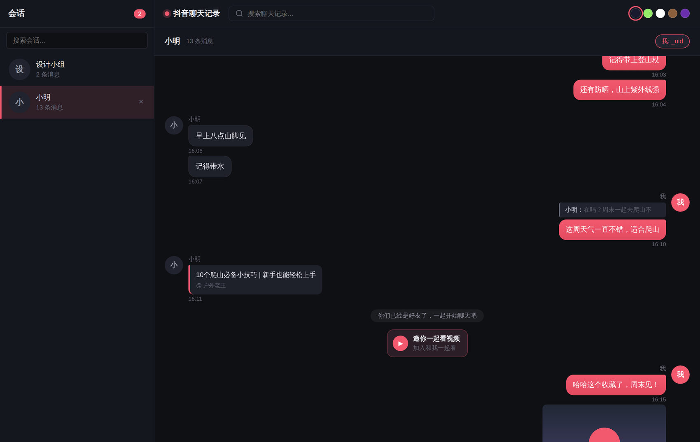
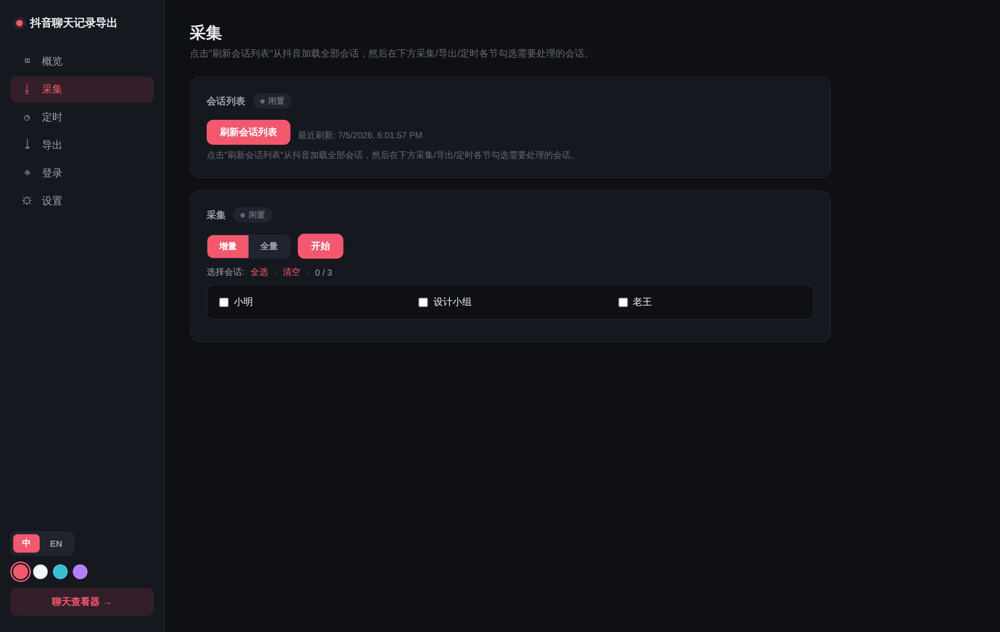

01
完整采集历史消息
支持增量更新与多种消息类型，按服务端时间顺序整理，让历史对话保持连贯。
WINDOWS 便携版 · V1.6
面向个人聊天备份的本地工具。采集、补全媒体、浏览搜索与多格式导出，都在你的电脑上完成。
仅用于导出并备份自己的聊天记录
核心能力
为日常备份设计，重要内容不必被网页滚动和临时链接困住。
01
支持增量更新与多种消息类型，按服务端时间顺序整理，让历史对话保持连贯。
02
图片、表情、视频、语音和远程图片分开管理，避免链接过期后无法查看。
03
内置聊天查看器，可全文检索并一键回到原消息，支持图片放大与媒体播放。
04
支持 JSON、JSONL、Excel 与 HTML 档案导出；ChatLab 格式可用于后续 AI 聊天分析。
简明流程
在本地浏览器完成账号登录。
选择需要保存的聊天对象。
下载并整理需要的媒体内容。
导出为适合留存或分析的格式。
界面预览


WINDOWS 便携版
点击前往夸克网盘，获取“抖音客户便携版 1.4 - HTML”文件。
 夸克网盘提取码：XtcY
前往下载 ↗
夸克网盘提取码：XtcY
前往下载 ↗